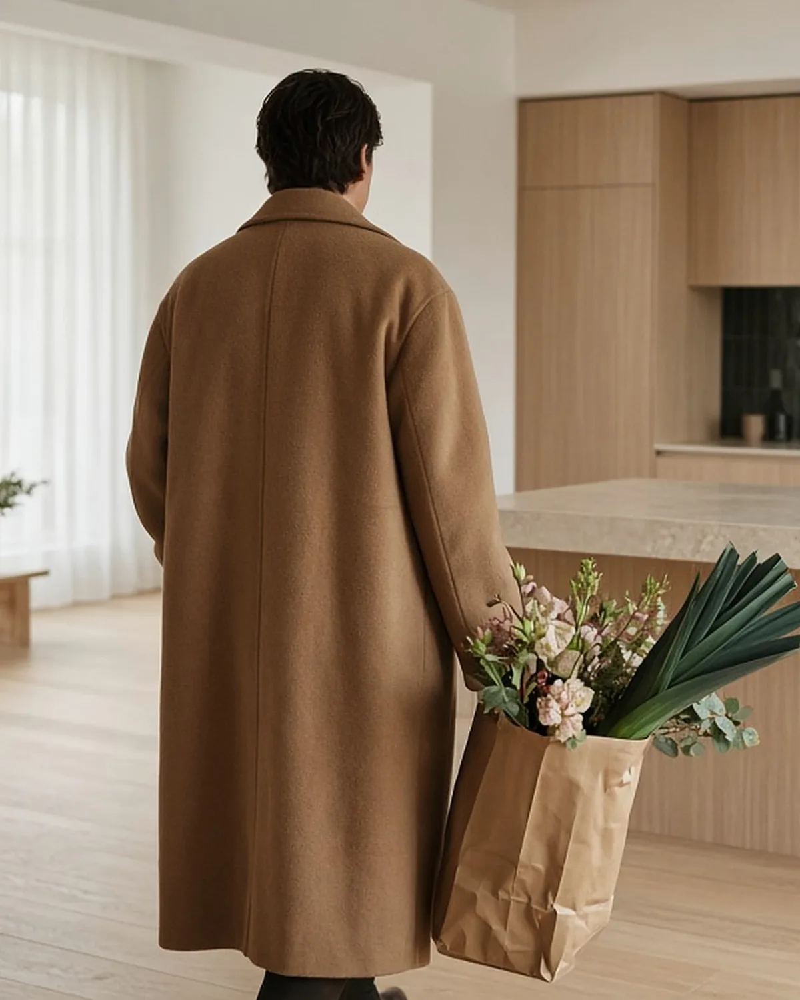
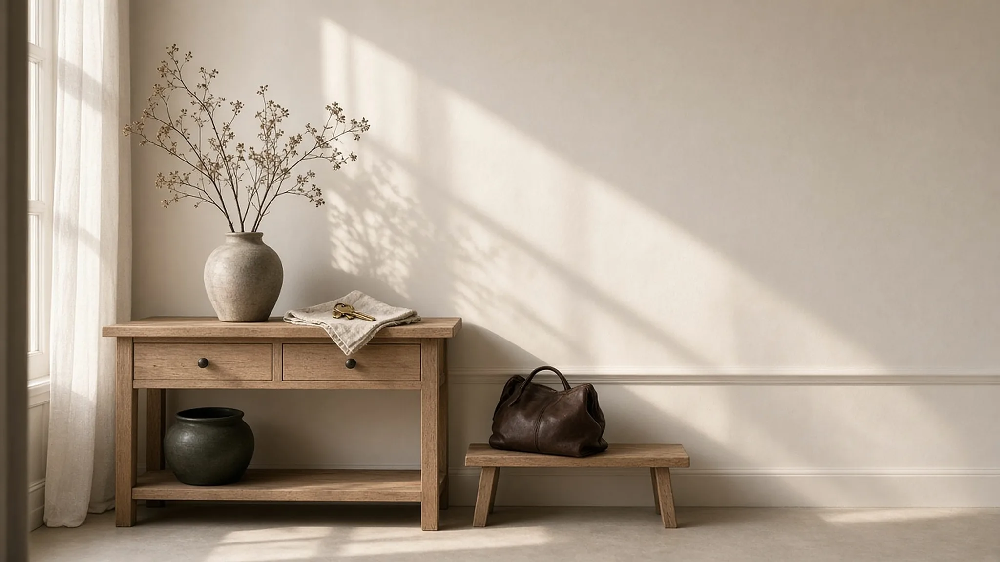

Voor bedrijven, praktijken en winkels in West- en Oost-Vlaanderen
Vaste hulpvoor je zaak.
Een Zondag is één vaste medewerker die je inboekt op je bedrijf. Zij poetst je kantoor, praktijk of winkel, houdt de administratie en de post bij, doet de boodschappen en regelt de kleine dingen.
- Steeds dezelfde persoon, gescreend en in dienst van Zondags
- Per blok van 3 uur
- Factuur op naam van je bedrijf
- Steeds dezelfde Zondag
- Gescreend en in dienst van Zondags
- Per blok van 3 uur
- Factuur op naam van je bedrijf
- Elke dag bereikbaar van 6 tot 22 uur
- West- en Oost-Vlaanderen
Voor bedrijven
Kantoren, kmo's en winkels.
Eén vaste Zondag voor de schoonmaak, de post en het regelwerk van je zaak. Per sector en per functie lees je hoe dat werkt.
Bekijk voor bedrijven →Voor artsen
Praktijken en medische centra.
Een frisse wachtzaal, een opgeruimd onthaal en hulp bij de niet-medische administratie, buiten je consulturen.
Bekijk voor artsen →Wat je Zondag overneemt.
 Poetshulp voor je zaakKantoor, praktijk of winkel, op een vaste dag en een vast uur.
Poetshulp voor je zaakKantoor, praktijk of winkel, op een vaste dag en een vast uur.
 Administratie en postPost, klasseren, dossiers en afspraken die blijven liggen.
Administratie en postPost, klasseren, dossiers en afspraken die blijven liggen.
 Boodschappen en regelwerkKoffie, pakjes, leveranciers en de kleine dingen voor je zaak.
Boodschappen en regelwerkKoffie, pakjes, leveranciers en de kleine dingen voor je zaak.

Een rechterhand voor jouVoor drukbezette bedrijfsleiders die zaken geregeld willen zien. Wat kost het?Eén pakket, per blok van 3 uur.
Wat kost het?Eén pakket, per blok van 3 uur.
Hoe het werkt
Drie stappen. Dan niets meer.
- Je vraagt info aanVier velden, vrijblijvend. Weet je al wat je nodig hebt? Vul dan meteen het aanvraagformulier in.
- We bellen je terugBinnen één werkdag. We bespreken wat er moet gebeuren, de dag en het uur.
- Je Zondag komt langsOp de afgesproken dag. Voor een vast ritme leggen we samen een zondagsplan vast.

Binnenkomen in plaats van beginnen.
Eén vaste Zondag, op een vaste dag. Wanneer jij of je team binnenkomt, is het werk al gedaan.
Wat is een Zondag?
Eén vaste persoon, elke week.
Een medewerker van Zondags die je inboekt per blok van 3 uur op je zaak of vennootschap. Steeds dezelfde persoon, op dezelfde dag, op hetzelfde uur.
- Door ons gescreend Selectie en opleiding
- In dienst van Zondags Geen zelfstandige
- Geboekt op je bedrijf Per blok van 3 uur
Veelgestelde vragen
Goed om te weten.
Wat doet een Zondag voor mijn bedrijf?
Een Zondag is één vaste medewerker van Zondags. Zij poetst je kantoor, praktijk of winkel, houdt de administratie en de post bij, doet de boodschappen en regelt de kleine dingen voor je zaak.
Wat kost een Zondag?
Eén pakket. Je boekt per blok van 3 uur. Extra uren kan je erbij boeken.
Wie kan een Zondag aanvragen?
Enkel bedrijven: vennootschappen, eenmanszaken, vrije beroepen en verenigingen. Je krijgt een gewone dienstenfactuur op naam van je bedrijf. Zondags werkt niet voor particulieren en niet met dienstencheques.
Komt er altijd dezelfde persoon?
Ja. Steeds dezelfde Zondag, op dezelfde dag en hetzelfde uur. Elke Zondag is door ons gescreend en in dienst van Zondags.
Hoe snel hoor ik iets na mijn aanvraag?
Binnen één werkdag bellen we je terug. Liever meteen iemand spreken? Stuur een bericht via WhatsApp op 0470 56 53 58, elke dag van 6 tot 22 uur.
In welke regio werkt Zondags?
In West- en Oost-Vlaanderen, vanuit Marke bij Kortrijk.
Klaar voor je eigen Zondag?
Laat je naam, je bedrijf en je gsm achter. We bellen je binnen één werkdag terug. Weet je al wat je nodig hebt? Vul dan meteen het aanvraagformulier in.
Zoek je werk? Werken bij Zondags: vaste klanten, overdag, geen avonden en geen weekends.
Naar werken bij Zondags